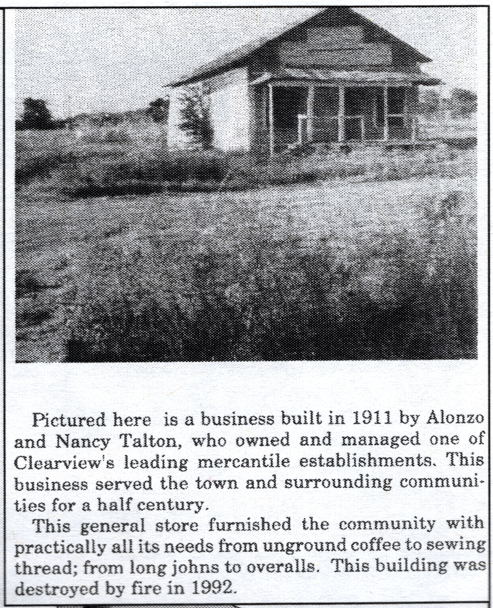
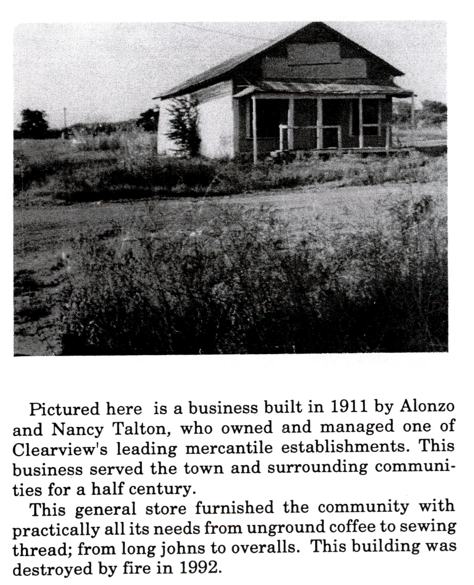
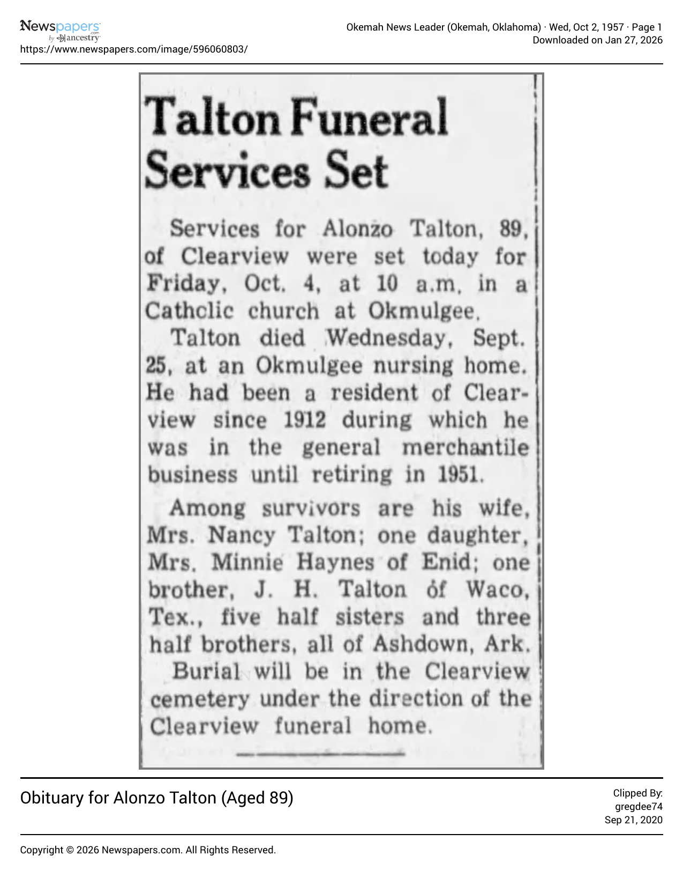
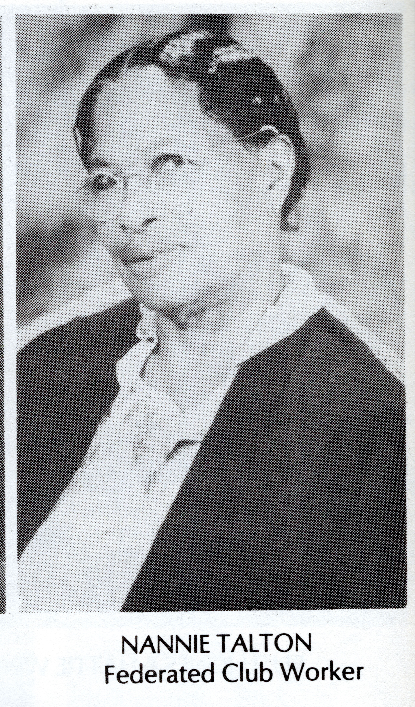

Alonzo Talton's Grocery Store
History
Born in 1869, Alonzo Talton moved to Clearview in 1912 and opened his grocery and mercantile store.
For nearly a half century the Taltons served the town and surrounding communities with most of their needs from clothes, tools, groceries, and other items. Items for sale included unground coffee, sewing thread, long johns, and overalls.
Alonzo Talton retired in 1951 and passed away a few years later in 1957 at the age of 89 at an Okmulgee nursing home. In 1992 fire destroyed the mercantile store building. The long mercantile table which held many of the goods was moved to the "old school gym" and is in use by the community during community functions.
Sign № · Lot
022 · Lot 50
Type
Grocery & mercantile
Owner
Alonzo Talton (1869 – 1957) and Nancy Talton
Operated
1912 – 1951
Gallery






Click photos to enlarge · Use arrows or drag to browse
Sources
Obituary
Obituary for Alonzo Talton, aged 89. View PDF →
History booklet · p. 4
Pages from the Clearview history booklet, page 4. View PDF →
Oral history
Recollections from Shirley Nero and Thomasene Withers Cudjoe.